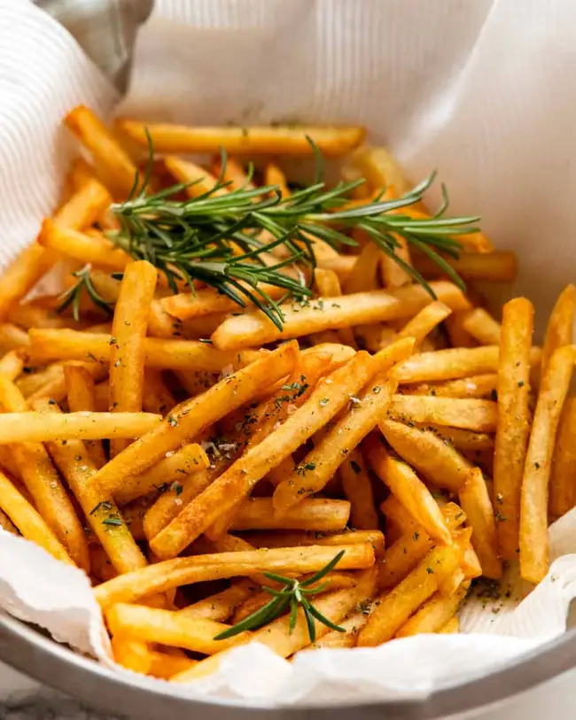

French fries

Description
These hot fries are so crispy they stay that way even after they’ve gone cold. It’s rare to find fries this good even at up-market bistros
ingredients
- Starchy potatoes
- High smoke point oil
- Vinegar
Recipe
- Cut fries to 6mm batons.
- Keep in water to prevent browning.
- Rinse fries under tap water.
- Add some vinegar to cold water, add fries, bring to a boil and simmer for 10 minutes.
- Drain and dry completely.
- Heat oil to 205 degree celsius.
- Fry for 50 seconds then cool 30 minutes.
- Fry again at the same temperature for 4 minutes until golden and crispy.
- Season with salt or your favourite seasoing.
Click to return